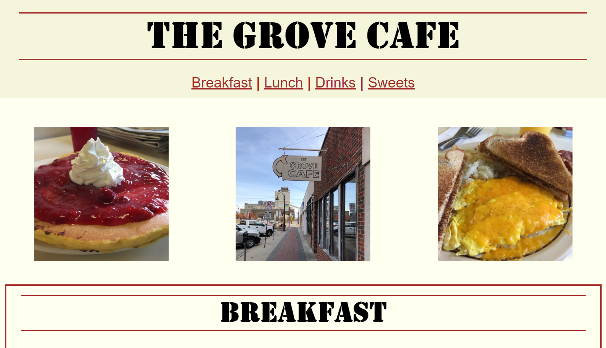
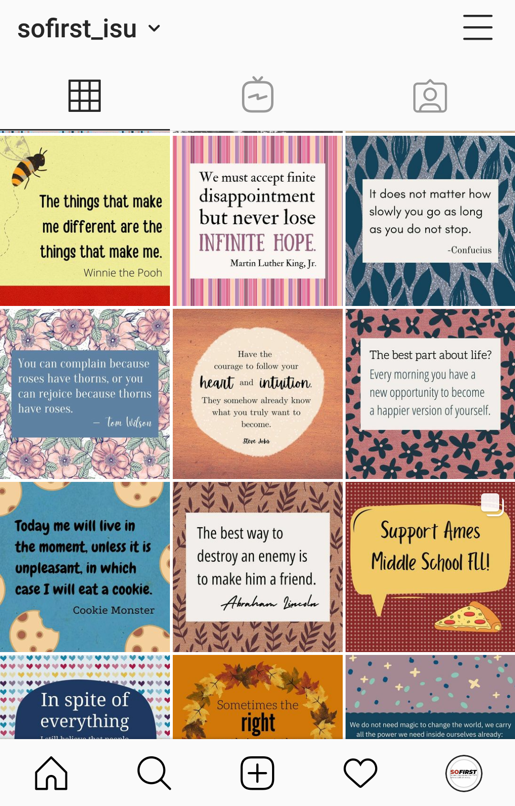

John Deere TRACE Scorecard Update
 Last summer, I completed a virtual internship for John Deere Customer and Product Support TRACE Team. My manager asked me to write programs that would automatically formulate and visualize data into a scorecard (like an infographic) which the TRACE team could use to explain their monthly accomplishments to other employees. While I knew how to design the infographic using communication concepts, I had no clue how to program it to be automatic, and the team had never done anything like this project.
Last summer, I completed a virtual internship for John Deere Customer and Product Support TRACE Team. My manager asked me to write programs that would automatically formulate and visualize data into a scorecard (like an infographic) which the TRACE team could use to explain their monthly accomplishments to other employees. While I knew how to design the infographic using communication concepts, I had no clue how to program it to be automatic, and the team had never done anything like this project.
For this project, I taught myself a new programming language (SQL) and more aspects of programming languages that I had some experience with (Python’s MatPlotlib functions and advanced parts of HTML/CSS). Using SQL, I wrote programs to automatically gather and calculate the data. Using MatPlotlib, I formulated most of the data into charts. Using HTML/CSS, I formatted the rest of the data. Finally, I learned how to use Databricks, the team’s data storage system, to turn the visualizations into a scorecard and allow the users to input the few items that needed to be added manually (such as dates and recent team successes).
The end results:
- I created a scorecard that the TRACE team was excited to use and went beyond what my manager originally expected.
- I found an innovative way of using their current system, Databricks.
- My scorecard was featured in Databricks’s September newsletter.
- I proved myself as a self-sufficient leader who is willing to learn new topics and skills.
John Deere Waterloo Works Communications Department
 After graduating high school, I gained technical writing experience by interning as an Early Talent Student at John Deere Waterloo Works. I worked in their communications department, completing projects including the “Waterloo Connection Weekly” newsletter, digital signage for employees shown at all six Waterloo locations, and articles for “John Deere Online” and “One.Deere.com”. I wrote six articles which were posted for employees and the general public worldwide about processes that happen at the factory and foundry.
After graduating high school, I gained technical writing experience by interning as an Early Talent Student at John Deere Waterloo Works. I worked in their communications department, completing projects including the “Waterloo Connection Weekly” newsletter, digital signage for employees shown at all six Waterloo locations, and articles for “John Deere Online” and “One.Deere.com”. I wrote six articles which were posted for employees and the general public worldwide about processes that happen at the factory and foundry.
Rhetorical Website Class Work
I enjoy finding ways to make information clear and easy for people to understand, and website development allows me to do this. Currently, I am taking a rhetorical website development class where I am learning advanced HTML and CSS concepts and how to make websites accessible and adaptable based on the screen size. Even only being a month into the class, I have enjoyed it so much!
SOFIRST Social Media
 At college, I joined SOFIRST, a FIRST robotics alumni organization, where I am the communications manager. I started our group’s Twitter and Instagram accounts, create all posts, and manage all communications. Since I had to take a break from promoting volunteer opportunities due to COVID-19, I design inspirational quote graphics which I post weekly.
FIRST Robotics Competition Team 525 Swartdogs Handouts
 I began my technical writing experience as a leader on my high school robotics team. I wrote our awards applications, presentations, website, and newsletters. This meant that for 4 years, I constantly communicated information about our team to judges, children, and the general public in visual, oral, and written forms. Specifically, I led preparing and submitting award applications, presentations, and interviews outlining our team’s accomplishments. I wrote and designed handouts explaining our team’s robots’ designs and technical features. I posted on our social media accounts and coded pages to show information on our website. I presented to children, describing the different parts of our robots. I wrote and ran workshops on how to coach robotics teams for youth.
I began my technical writing experience as a leader on my high school robotics team. I wrote our awards applications, presentations, website, and newsletters. This meant that for 4 years, I constantly communicated information about our team to judges, children, and the general public in visual, oral, and written forms. Specifically, I led preparing and submitting award applications, presentations, and interviews outlining our team’s accomplishments. I wrote and designed handouts explaining our team’s robots’ designs and technical features. I posted on our social media accounts and coded pages to show information on our website. I presented to children, describing the different parts of our robots. I wrote and ran workshops on how to coach robotics teams for youth.
Overall, these experiences showed me my passion for explaining technical jargon in an easy-to-understand way. I discovered that I wanted a career where I combine my interests in communications and STEM, just like my time on the robotics team allowed me to do.